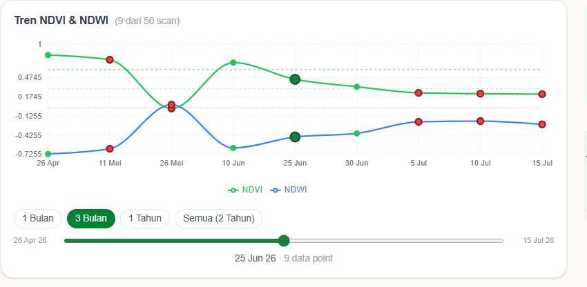

Sinagri: Satellite Intelligence for Agricultural Resilience & Integrity
Remote Sensing & Carbon Verification Algorithm
Purpose & Objective:
This document is prepared as a technical guide and scientific blueprint for auditors and stakeholders to validate the satellite monitoring algorithms used in the AgriMRV system.
Prepared By: Ichan Putra
Date: July 16, 2026
1. Introduction
The AgriMRV by Save Subak platform utilizes cutting-edge remote sensing technology to perform Measurement, Reporting, and Verification (MRV) on rice paddy fields. This document summarizes our scientific methodology, ensuring full transparency for carbon auditors and environmental sustainability stakeholders.
2. Monitoring Satellite Specifications
To ensure data reliability in all weather conditions, AgriMRV uses a multi-sensor approach leveraging the Copernicus satellite constellation owned by the European Space Agency (ESA).
A. Sentinel-2 (Multispectral Optical Satellite)
Function: Acts as a "Giant Camera" that captures sunlight reflection (both visible and infrared) from the earth's surface.
Advantage: Spatial resolution up to 10 meters, extremely sharp for mapping individual paddy plots.
Revisit Interval: Passes over the same location every 5 days, providing highly dense time-series data at no cost.
B. Sentinel-1 (Radar / SAR Satellite)
Function: Utilizes Synthetic Aperture Radar (SAR) technology that actively emits microwaves to the earth and captures their backscatter.
Key Advantage: Capable of penetrating thick clouds and rain, and operates at night. Used to measure plant physical structure and surface soil moisture (VV & VH polarizations).
This section dissects the five satellite parameters utilized by the AgriMRV system. Each parameter is not only measured mathematically but has a direct correlation with organic farming practices and carbon emission calculations.
Primary Objective: Measures the health level, canopy density, and biomass growth rate of the paddy.
Organic Farming Correlation: Serves as empirical evidence that organic/compost fertilizers (without synthetic chemicals) successfully provide optimal nutrition. A continuously rising NDVI curve proves that organic soil perfectly supports plant growth.
Carbon Credit Correlation: The higher the biomass (dense green leaves), the greater the photosynthesis process. Photosynthesis literally vacuums CO2 from the atmosphere and stores it within the plant's tissue (Carbon Sequestration). High NDVI = High Carbon Sequestration.
Analogy: "The Red Burger and the Hot Stone"
The sun throws Red light and Infrared (NIR/Hot Stone). Healthy paddy leaves devour the Red as food, and kick the Hot Stone far away because it's dangerous. The satellite calculates: (High - Zero) / (High + Zero). The result is a High Positive (+1). Conversely, bare soil cannot eat red light, making its value Negative.
3.2. NDWI (Optical Inundation Detection)
Satellite Formula (McFeeters):(Green - NIR) / (Green + NIR)
Primary Objective: Distinguishes water inundation areas from dry land conditions with high precision, specifically when the sky is clear.
Organic Farming Correlation: Ensures compliance with the irrigation schedule of traditional Subak governance.
Carbon Credit Correlation: The key to paddy emissions lies in the water. Continuously flooded fields produce anaerobic bacteria (without oxygen) that release Methane Gas (CH4), which is 28x more destructive than CO2.
AWD Detection Support (During Clear Weather): If the sky is clear, NDWI helps radar verify land drying practices (AWD) through a zig-zag graph (positive to negative). However, since the planting season in tropical regions often coincides with thick rain clouds, the primary task of AWD verification is handed over to the Radar VV satellite.
Analogy: "The Giant Stone-Swallowing Sponge"
Water is the enemy of infrared (NIR). When infrared hits water, water swallows it completely (0 Reflection). However, Green light still reflects slightly. The satellite calculates (Green - Zero) / (Green + Zero) = Bright Positive. However, when the land is dried for the AWD protocol, the soil kicks the infrared back to space, changing the calculation to Dark Negative. This "Bright-Dark" blinking on the satellite is valid proof of successful AWD.
3.3. NBR (Normalized Burn Ratio)
Satellite Formula:(NIR - SWIR) / (NIR + SWIR)
Primary Objective: Acts as a post-harvest "Lie Detector" to ensure no paddy straw is burned.
Organic Farming Correlation: Harvest straw residues must be left to decompose or plowed back into the soil as natural compost to restore nutrients. Burning destroys this organic nutrient cycle.
Carbon Credit Correlation: Burning straw instantly releases Black Carbon and concentrated CO2 into the air (Massive Emission). The system guarantees a Zero Burn status as an absolute prerequisite for issuing carbon credits. A violation means credit cancellation.
Analogy: "The Oven Ray Ash Seeker"
The Oven Ray (SWIR) is highly sensitive to water but absorbed by wet objects. A normal harvested field still retains natural moisture, thus completely absorbing the Oven Ray (Positive value). If the field is burned, the bone-dry charcoal and ash (0% water) reflect the Oven Ray so brightly it blinds the satellite, causing the value to plummet to a Sharp Negative.
3.4. Radar VV (Primary Sensor for Cloud-Penetrating AWD Verification)
Primary Objective: Acts as the backbone for detecting soil roughness and serves as the primary sensor for AWD practice verification because it cannot be obstructed even by heavy monsoon clouds.
Organic Farming Correlation: Ensures the soil is perfectly plowed so that organic compost fertilizer is evenly mixed into the mud.
AWD Protocol Reading (Aeration Days Quantification): This is our ultimate weapon to meet strict Verra VM0051 standards. When the field is flooded, the VV Radar signal bounces away (VV Value plummets). However, when farmers drain the water for periodic drying (AWD), the rough soil surface is exposed again, causing the Radar to bounce back hard (VV Value skyrockets).
The system doesn't just look at the graph, but automatically calculates the duration in days between the upward graph (drying starts) and the downward graph (flooding starts). This quantitative figure is referred to as "Total Aeration / Dry Days". Without this valid figure from Radar VV, we could not mint AWD carbon credits in tropical regions!
Analogi: "Throwing a Straight Tennis Ball"
The radar acts like a bat. The satellite throws a "tennis ball" straight down to earth. If the land is flooded with water (smooth like a mirror), the ball bounces away (Echo Lost = VV Plummets). But when the land is intentionally dried for AWD, the ball hits rough soil and bounces straight back up (Loud Echo = VV Skyrockets). This sudden upward spike in the graph narrates the farmer's AWD discipline without the satellite having to see it visually.
Primary Objective: Scans the 3D volume of the plant canopy structure, completely disregarding whether the weather is dark or heavily clouded.
Organic Farming Correlation: Measures stem density and paddy leaf lushness. This mechanically proves that the plants (even without synthetic chemicals) grow with a very sturdy posture and large volume.
Carbon Credit Correlation: During the high rainfall cycle (monsoon season), the optical satellite (NDVI) becomes "blind" due to clouds. VH takes over the biomass proofing task. This validates that CO2 absorption by the plants never stops for a second, keeping the carbon calculation intact and recognized by global auditors.
Analogy: "Throwing a Spinning Tennis Ball"
The satellite throws a straight ball, but the ball crashes into a lush "forest" of paddy stems. The ball gets trapped and bounces chaotically inside the canopy, then bounces back into space with a sideways spin (Horizontal). The lusher the paddy, the more "spinning balls" bounce back hitting the satellite (High VH).
5. System Accuracy Proof: Planting Phase Case Study
To prove that the formulas used work perfectly in the field, observe the fluctuation graph of NDVI and NDWI in the following paddy field area:

Validation Analysis (Why Do the Lines Move Like Mirrors?):
The exactly inverted (symmetrical) graph between NDVI (Green) and NDWI (Blue) is absolute proof of the system's accuracy for paddy fields:
Flooding Phase (Start of Graph - May 26): The field is plowed and filled with water. Water swallows the NIR waves, causing NDWI to skyrocket. Since there are no leaves yet, NDVI plummets.
Lush Vegetative Phase (Middle of Graph - Jun 25): The paddy grows densely covering the water. The leaves reflect NIR massively. As a result, NDVI skyrockets upwards. Because the water is covered by the canopy, NDWI drops to negative.
This "crossed mirror" pattern is a unique fingerprint of a healthy paddy planting cycle.
After the satellites (Optical & Radar) verify that farmers have genuinely executed organic and AWD practices, the AgriMRV system calculates the amount of greenhouse gas emissions prevented. We refer to global standard methodologies such as UNFCCC CDM AMS-III.AU (Methane emission reduction by adjusted water management practice in rice cultivation).
Primary Emission Reduction (ER) Formula: ER = BE - PE - LE
BE (Baseline Emissions - 6-Month Historical): Emissions if the farmer did not join the program (fields continuously flooded). For server efficiency and accuracy, the system uses an On-Demand Pull approach. When a new field is registered, the system will only pull satellite history 6 months backward as authentic evidence of the farmer's old habits (Baseline), and store it permanently.
PE (Project Emissions): The current real emissions after farmers comply with the AWD protocol. The system converts the "Total Aeration Days" from Radar VV into the tonnage of methane gas (CH4) reduced.
LE (Leakage Emissions): Leakage emissions outside the project area (typically assumed to be zero).
Why is Methane (CH4) so valuable?
In climate science (Global Warming Potential / GWP), preventing 1 Ton of Methane Gas from paddy fields is equivalent to preventing the release of 28 Tons of CO2! This is why the combination of Radar VV (for AWD proof) and NDVI (for organic biomass proof) verifications generates highly premium carbon credits (High-Quality Carbon Credits).
This section is provided specifically for technical auditors (Whitebox Concept) to verify that the index calculations purely use international standard formulas.
/**
* SATELLITE INDEX CALCULATION FUNCTIONS (SENTINEL-2)
* Platform: AgriMRV by Save Subak
*/
// 1. NDVI (Normalized Difference Vegetation Index)
export function calculateNDVI(nir, red) {
if (nir + red === 0) return 0; // Prevent divide by 0 error
return (nir - red) / (nir + red);
}
// 2. NDWI (Normalized Difference Water Index) - McFeeters Method
export function calculateNDWI(green, nir) {
if (green + nir === 0) return 0;
return (green - nir) / (green + nir);
}
// 3. NBR (Normalized Burn Ratio)
export function calculateNBR(nir, swir) {
if (nir + swir === 0) return 0;
return (nir - swir) / (nir + swir);
}